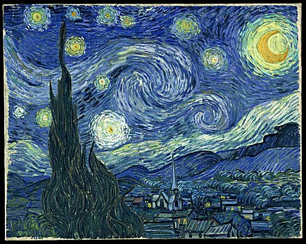
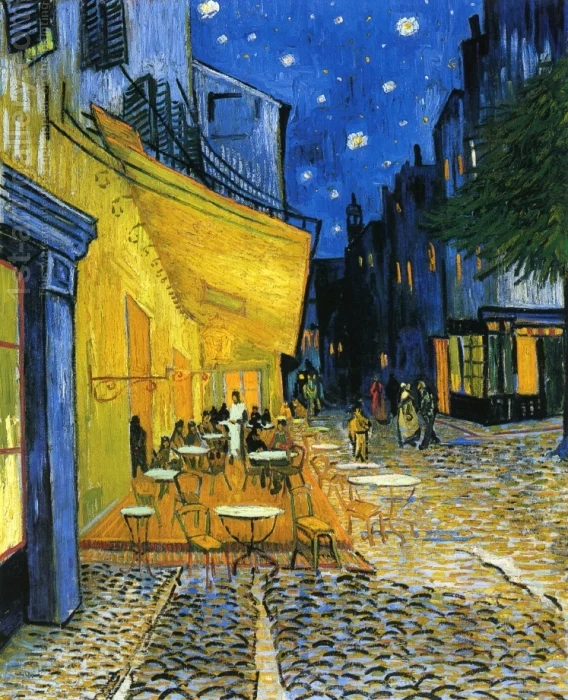

Tribute to Vincent Van Gogh
About Vincent Van Gogh
- Born: 30 March 1853 at Zundert, Netherlands
- Died: 29 July 1890 (aged 37) at Auvers-sur-Oise, France
Vincent Willem van Gogh was a Dutch Post-Impressionist painter who is among the most famous and influential figures in the history of Western art. In just over a decade, he created approximately 2100 artworks, including around 860 oil paintings, most of them in the last two years of his life. His oeuvre includes landscapes, still lifes, portraits, and self-portraits, most of which are characterized by bold colors and dramatic brushwork that contributed to the rise of expressionism in modern art. Van Gogh's work was beginning to gain critical attention before he died from a self-inflicted gunshot at age 37. During his lifetime, only one of Van Gogh's paintings, The Red Vineyard, was sold.
Born into an upper-middle-class family, Van Gogh drew as a child and was serious, quiet and thoughtful, but showed signs of mental instability. As a young man, he worked as an art dealer, often travelling, but became depressed after he was transferred to London. He turned to religion and spent time as a missionary in southern Belgium. Later he drifted into ill-health and solitude. He was keenly aware of modernist trends in art and, while back with his parents, took up painting in 1881. His younger brother, Theo, supported him financially, and the two of them maintained a long correspondence.
Van Gogh's early works consist of mostly still lifes and depictions of peasant laborers. In 1886, he moved to Paris, where he met members of the artistic avant-garde, including Émile Bernard and Paul Gauguin, who were seeking new paths beyond Impressionism. Frustrated in Paris and inspired by a growing spirit of artistic change and collaboration, in February 1888, Van Gogh moved to Arles in southern France to establish an artistic retreat and commune. Once there, Van Gogh's art changed. His paintings grew brighter and he turned his attention to the natural world, depicting local olive groves, wheat fields and sunflowers. Van Gogh invited Gauguin to join him in Arles and eagerly anticipated Gauguin's arrival in the fall of 1888.
Van Gogh suffered from psychotic episodes and delusions. Though he worried about his mental stability, he often neglected his physical health, did not eat properly and drank heavily. His friendship with Gauguin ended after a confrontation with a razor when, in a rage, he severed his left ear. Van Gogh spent time in psychiatric hospitals, including a period at Saint-Rémy. After he discharged himself and moved to the Auberge Ravoux in Auvers-sur-Oise near Paris, he came under the care of the homeopathic doctor Paul Gachet. His depression persisted, and on 27 July 1890, Van Gogh is believed to have shot himself in the chest with a revolver, dying from his injuries two days later.
Van Gogh's work began to attract critical artistic attention in the last year of his life. After his death, Van Gogh's art and life story captured public imagination as an emblem of misunderstood genius, due in large part to the efforts of his widowed sister-in-law Johanna van Gogh-Bonger. His bold use of color, expressive line and thick application of paint inspired avant-garde artistic groups like the Fauves and German Expressionists in the early 20th century. Van Gogh's work gained widespread critical and commercial success in the following decades, and he has become a lasting icon of the romantic ideal of the tortured artist. Today, Van Gogh's works are among the world's most expensive paintings ever sold. His legacy is honored and celebrated by the Van Gogh Museum in Amsterdam, which holds the world's largest collection of his paintings and drawings.
some Famous Paintings
1. The Starry Night
The Starry Night is undoubtedly one of the most famous Van Gogh paintings, and it has become an iconic image in art history. The work showcases Van Gogh's unique style, with its vibrant colors and swirling brushstrokes, capturing the feeling of movement and energy in the night sky. The painting is widely recognized for its emotional depth and beauty, and it continues to inspire and captivate viewers around the world.
2. Cafe Terrace At Night
"Café Terrace at Night" depicts a vibrant scene of people gathered outside a café in Arles, France. The painting is renowned for its bold use of color and dynamic brushstrokes, which convey a sense of movement and energy. The warm yellows and oranges of the building and sky contrast with the cool blues and greens of the surrounding streets, creating a vibrant visual contrast. Beyond its aesthetic value, "Café Terrace at Night" also offers insight into the social and cultural context of the time. The painting reflects the growing popularity of outdoor cafes in 19th century Europe, as well as Van Gogh's own fascination with the people and places around him.
3. Starry Night Over The Rhone

Van Gogh seems to have been particularly enchanted by the night sky, and the gas lighting visible across the water in Arles. He was excited enough about the painting to include a sketch of it to his friend, the painter Eugène Boch, and the work was publicly exhibited in 1889 at the Société des Artistes Indépendants in Paris. He also described the painting in almost loving detail in one of the many letters he wrote to his brother Theo, describing it as “…the starry sky painted by night, actually under a gas jet. The sky is aquamarine, the water is royal blue, the ground is mauve. The town is blue and purple. The gas is yellow and the reflections are russet gold descending down to green-bronze. On the aquamarine field of the sky the Great Bear is a sparkling green and pink, whose discreet paleness contrasts with the brutal gold of the gas. Two colorful figurines of lovers in the foreground.”